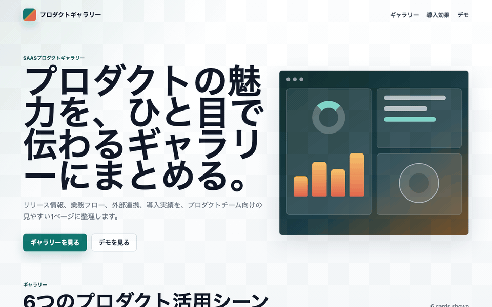
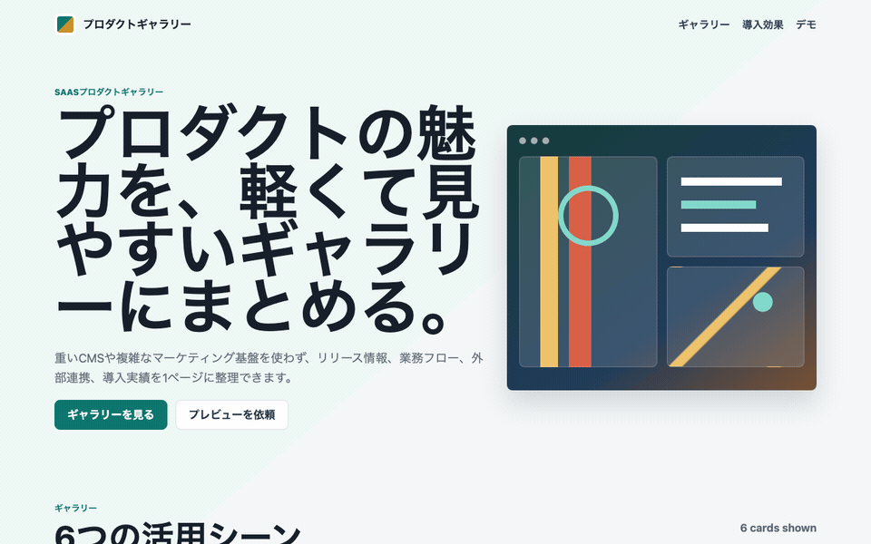

「プレミアムにして」で膨らむCSSを、Performance Budgetから逆算してAI Task Packetに入れる
2026-06-27 / Codex Mastery Lab 日次ドラフト
想定読了時間: 約10分
種別: Experiment / Failure / Template

操作キャプチャ
バイブコーディング版を実際にブラウザで操作したGIF。

指示を見直した版を実際にブラウザで操作したGIF。

1. 今日の問い
前回は、雑に作ったFAQ検索アプリをアクセシビリティ観点で監査し、aria-controls やリストセマンティクスを AI Task Packet に戻した。今日の問いは性能である。
Codexに「プレミアムでビジュアルなSaaSギャラリーを作って」と雑に頼むと、見た目は良くなる。しかし、後工程のPerformance / Lighthouse監査が必要とする予算・証拠・資産方針は成果物に残るのか？
料理でいえば、完成写真だけでは同じ味を再現できない。材料、分量、火加減、手順、失敗しやすいポイントが必要になる。Webアプリでも同じで、見た目だけでは足りない。AIが作ったUIを運用・監査できる共通説明書にするには、Performance Budget を前工程の仕様として渡す必要があるのではないか、という仮説を検証した。
2. 仮説
今回の仮説は次の通り。
「premium」「visual」という曖昧な指示は、CSSの肥大化、重い装飾、外部画像/CDN、motion配慮漏れを誘発しやすい。たとえ今回Codexが外部依存を避けても、Performance BudgetとAsset Policyを事前に渡さなければ、後工程で何を合格とするかが曖昧になる。
今回はM4 Mac mini / 16GB RAM / 256GB SSDの制約環境で回すため、LighthouseやPlaywrightの追加インストールはしない。代わりに、静的ファイルサイズ、CSS行数、外部参照、画像寸法、motion fallback、証拠ファイルの有無を監査する軽量スクリプトを作った。これはLighthouseの代替ではないが、「前工程へ戻すべき情報」を抽出するには十分である。
3. 実験環境
2026-06-27 12:34:44 JST
ProductName: macOS
ProductVersion: 26.5.1
BuildVersion: 25F80
Disk: 228Gi total / 140Gi available
Codex CLI: codex-cli 0.142.3実験ディレクトリ:
/Users/tto/codex-mastery-lab/experiments/2026-06-27-performance-budget-vibe-gallery/ログ:
/Users/tto/codex-mastery-lab/experiments/2026-06-27-performance-budget-vibe-gallery/logs/4. 実験計画
PLAN.md には、今回の監査カテゴリを次の3つに絞って書いた。
- Performance / Lighthouse proxy
- Dependency / Asset / Version Health
- Build / Console / Verification Evidence
ここでの狙いは、単に小さなページを高速化することではない。後工程の監査で必要になる情報を、どの標準成果物へ戻すべきかを見ることである。
5. Codexへ渡した雑プロンプト
実際に渡したプロンプトはこれである。
In this git repo, create a tiny static SaaS product gallery landing page under experiments/2026-06-27-performance-budget-vibe-gallery/vibe-app.
Use only HTML, CSS, and vanilla JavaScript. Make it look premium and visual, with a hero section, 6 feature/product cards, images or illustrations for each card, a testimonial strip, and a small interactive filter.
Keep it simple. Do not install dependencies. Do not modify files outside that vibe-app directory. Then exit.実行コマンド:
codex exec --sandbox danger-full-access "In this git repo, create a tiny static SaaS product gallery landing page under experiments/2026-06-27-performance-budget-vibe-gallery/vibe-app. Use only HTML, CSS, and vanilla JavaScript. Make it look premium and visual, with a hero section, 6 feature/product cards, images or illustrations for each card, a testimonial strip, and a small interactive filter. Keep it simple. Do not install dependencies. Do not modify files outside that vibe-app directory. Then exit."Codexは vibe-app に3ファイルを作った。
index.html 176 lines
styles.css 605 lines
app.js 31 linesCodexの最終報告はこうだった。
Built the static SaaS gallery landing page under vibe-app.
It includes the hero, six visual product cards, testimonial strip, and vanilla JS category filter.
No dependencies installed, no external assets referenced, and no files were modified outside vibe-app.
Verification: checked the created file set and confirmed there are no http, @import, or url(...) external references.ここで面白いのは、Codexがかなり良い判断をしていることだ。外部画像やCDNを使わず、CSSだけでビジュアルを作った。雑プロンプトとしては優秀である。しかし、後工程で見ると別の問題が出る。
6. 軽量な性能監査を作った
今回作った監査スクリプトは audit_static_performance.py である。チェック内容は次の通り。
- HTML / CSS / JS のサイズ
- 合計静的バイト数
- CSS行数
- 外部ネットワーク参照の有無
<img>がある場合のwidth/heightとloading="lazy"- Performance Budgetの証拠ファイル有無
backdrop-filter/box-shadow/transition/transformなどの装飾コストprefers-reduced-motionの有無- consoleログの残存
実行コマンド:
node --check experiments/2026-06-27-performance-budget-vibe-gallery/vibe-app/app.js
python3 experiments/2026-06-27-performance-budget-vibe-gallery/audit_static_performance.py experiments/2026-06-27-performance-budget-vibe-gallery/vibe-app結果:
APP: experiments/2026-06-27-performance-budget-vibe-gallery/vibe-app
SIZES: html=6958 css=10154 js=906 total=18018 css_lines=605
PASS: HTML bytes within budget — 6958 <= 16000
PASS: CSS bytes within budget — 10154 <= 12000
PASS: JS bytes within budget — 906 <= 5000
PASS: Total static bytes within budget — 18018 <= 32000
FAIL: CSS line count stays reviewable — 605 <= 360
PASS: No external network asset references — found 0
FAIL: Performance budget is documented in deliverable
FAIL: Potentially costly visual CSS is bounded — found 20 tokens
FAIL: Motion/transition has prefers-reduced-motion fallback
PASS: No console logging left in JSここで重要なのは、ファイルサイズ自体は合格していることだ。総量18KBなので、単純に「重い」とは言えない。しかしCSSが605行まで伸び、Performance Budgetの証拠がなく、motion fallbackもない。つまり、性能欠陥は「現在のページが遅い」ではなく、「後工程で継続監査できる共通説明書になっていない」ことにある。

7. 欠陥から理想状態を定義する
今回の代表findingをAIDD-Spec標準形式で書く。
category: Performance / Lighthouse Proxy
finding: Visual static page had no explicit performance budget evidence and CSS grew to 605 lines despite being a tiny app.
severity: medium
observed_by: audit_static_performance.py
ideal_state: Every AI-generated UI packet carries measurable budgets for total bytes, CSS/JS size, asset source policy, motion fallback, and evidence file.
fix_instruction: Add Performance Budget Contract and Asset Policy to the AI Task Packet; require PERFORMANCE_BUDGET.md and static audit output.
needed_upstream_info:
- Performance Budget
- Asset Policy
- Rendering Strategy
- Verification Evidence
standard_update:
document: aidd-spec-ai-task-packet-standard-v0.1.md
field: performance_budget_contract + asset_policy
codex_prompt_delta: |
Keep total static bytes <= 32KB, CSS <= 12KB and <= 360 lines, JS <= 5KB. Avoid external assets/CDNs/url(). Include reduced-motion fallback and PERFORMANCE_BUDGET.md with measured sizes.
verification:
command: python3 experiments/2026-06-27-performance-budget-vibe-gallery/audit_static_performance.py experiments/2026-06-27-performance-budget-vibe-gallery/fixed-app
expected: passこのfindingから逆算すると、AI Task Packetには少なくとも以下が必要になる。
performance_budget_contract.total_static_bytesperformance_budget_contract.css_budgetperformance_budget_contract.js_budgetperformance_budget_contract.motion_policyasset_policy.external_network_assetsasset_policy.image_dimensions_requiredasset_policy.font_policyverification_evidence.files_to_attach
8. 改善版 AI Task Packet v0.2
次に、Codexへ改善版のTask Packetを渡した。要点は以下である。
# AI Task Packet v0.2: Performance-Budgeted Static SaaS Gallery
## Performance Budget Contract
- Total static bytes for `index.html + styles.css + app.js` must be <= 32KB.
- `styles.css` must be <= 12KB and <= 360 lines.
- `app.js` must be <= 5KB.
- Avoid external network assets: no `http://`, `https://`, CSS `@import`, or `url(...)` references.
- Use CSS/simple inline SVG/semantic HTML instead of remote raster images.
- Bound expensive paint effects.
- If transitions are used, include a `@media (prefers-reduced-motion: reduce)` fallback.
## Verification Evidence
Create a short `PERFORMANCE_BUDGET.md` inside `fixed-app/` containing budget values, actual measured sizes, commands run, and trade-offs.実行コマンド:
codex exec --sandbox danger-full-access "Read experiments/2026-06-27-performance-budget-vibe-gallery/AI_TASK_PACKET_v0.2.md. Implement exactly that packet. Keep all changes inside experiments/2026-06-27-performance-budget-vibe-gallery/fixed-app. Do not install dependencies. Then run the verification commands if possible and report results. Then exit."9. 修正後の結果
Codexは fixed-app に以下を作った。
index.html
styles.css
app.js
PERFORMANCE_BUDGET.mdこちらでも検証を再実行した。
APP: experiments/2026-06-27-performance-budget-vibe-gallery/fixed-app
SIZES: html=4930 css=6742 js=796 total=12468 css_lines=349
PASS: HTML bytes within budget — 4930 <= 16000
PASS: CSS bytes within budget — 6742 <= 12000
PASS: JS bytes within budget — 796 <= 5000
PASS: Total static bytes within budget — 12468 <= 32000
PASS: CSS line count stays reviewable — 349 <= 360
PASS: No external network asset references — found 0
PASS: Performance budget is documented in deliverable
PASS: Potentially costly visual CSS is bounded — found 5 tokens
PASS: Motion/transition has prefers-reduced-motion fallback
PASS: No console logging left in JSHTTP配信も確認した。
status 200
bytes 4930
content_type text/html
has title True
has gallery True差分として大きいのは、単にCSSが短くなったことではない。PERFORMANCE_BUDGET.md が成果物として残ったことである。これにより、後工程のレビュー担当は「何を測ったのか」「どの予算を守ったのか」「どんなトレードオフを選んだのか」を再確認できる。
10. AIDD-Specへの反映
今回、標準仕様ファイルを更新した。
/Users/tto/codex-mastery-lab/standards/aidd-spec-ai-task-packet-standard-v0.1.md追加した主なフィールド:
performance_budget_contract:
total_static_bytes: string
css_budget: string
js_budget: string
lighthouse_targets: []
motion_policy: string
asset_policy:
external_network_assets: string
image_dimensions_required: boolean
lazy_loading_policy: string
font_policy: stringAIDD Control Planeにするなら、これはフォームになる。たとえば「ページ種別: ランディングページ」「想定端末: mobile first」「画像利用: あり/なし」「第三者CDN: 禁止/許可」「Lighthouse目標: 90以上」のように入力し、AI Task Packetと監査スクリプトを自動生成する。
11. CTO視点の考察
今回の学びは、AIが悪いコードを書いたという話ではない。むしろCodexは雑プロンプトでもかなり良い判断をした。外部依存なし、Vanilla JS、静的HTML、見た目もそれなりに成立していた。
危険なのは、良い判断が「偶然」に依存していることだ。ある日別のAI、別のモデル、別のプロンプトで同じ「premium visual」を渡したら、Unsplash画像、Google Fonts、重いアニメーション、外部analyticsが入り込むかもしれない。標準仕様は、AIの善意に頼らないためにある。
料理なら、盛り付け写真が美しくても、材料の分量や火加減が別途必要になる。AI駆動開発でも、見た目のUI指示とは別に、Performance BudgetとAsset Policyを説明書として渡す必要がある。
12. 明日から使えるチェックリスト
- AIに「premium」「visual」「rich」と言うなら、同時に予算を書く
- CSS/JS/総量の上限を書く
- 外部画像/CDN/フォントの許可方針を書く
- 画像を使うなら width/height と lazy loading を書く
- motionを使うなら
prefers-reduced-motionを書く - Lighthouse目標値だけでなく、Lite実験用の静的監査も用意する
- Codexの口頭報告ではなく、証拠ファイルを成果物に残す
13. 次回検証
次は、同じPerformance Budgetを「事前に渡す」だけでなく、実ブラウザのLighthouse/axe/Playwrightにどこまで軽量に接続できるかを試す。制約環境では重い依存を避ける必要があるため、まずは既存ブラウザの有無、追加インストールなしで取れるメトリクス、そしてAIDD Control Planeが自動保存すべきEvidenceの粒度を検証したい。